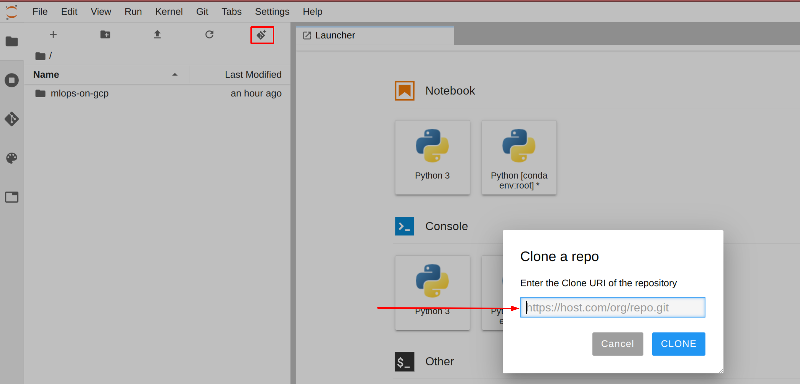

Per clonare il blocco note mlops-on-gcp nella tua istanza di JupyterLab:
Passaggio 1
In JupyterLab, fai clic sull'icona Terminale per aprire un nuovo terminale.
Passaggio 2
Al prompt della riga di comando, digita il comando seguente e premi Invio.
Se il repository clonato non viene visualizzato nella UI di JupyterLab, puoi selezionare Git --> Clone a repository dal menu in alto a destra e clonare il repository (https://github.com/GoogleCloudPlatform/mlops-on-gcp) mediante la UI.

Passaggio 3
Assicurati di avere clonato il repository facendo doppio clic sulla directory mlops-on-gcp e verificando che il relativo contenuto sia visibile. I file per tutti i lab basati su blocchi note Jupyter di questo corso sono disponibili in questa directory.